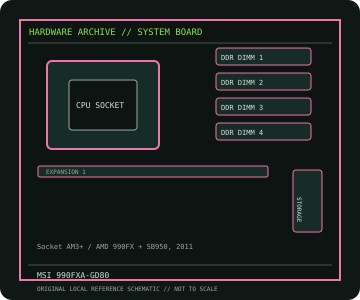

[ INDIVIDUAL COMPONENT // MOTHERBOARDS ]
MSI 990FXA-GD80
990FXA-GD80: Socket AM3+ / AMD 990FX + SB950, 2011; revision-aware Socket motherboard specifications, CPU/BIOS qualification, board size, memory, expansion, storage and I/O.

IDENTIFICATION: MSI retail model 990FXA-GD80; record physical PCB revision/BIOS before service. Confirm the exact silkscreen, revision and firmware on the physical board; near-name variants can use different BIOS files and connectors.
Specifications
| Catalog subcategory | AMD Socket platforms |
|---|---|
| Exact board / model | 990FXA-GD80 — MSI retail model 990FXA-GD80; record physical PCB revision/BIOS before service |
| Platform and chipset | Socket AM3+ / AMD 990FX + SB950, 2011; AMD 990FX northbridge with SB950 southbridge. |
| CPU and BIOS support | AM3+/AM3; MSI lists AMD FX and selected Phenom II, Athlon II and Sempron processors. Minimum BIOS and CPU power limits are model-specific. |
| Memory | Four DDR3 DIMM sockets, dual-channel, up to 32 GB; speeds above standard DDR3 are overclocked profiles subject to CPU/BIOS and DIMM qualification. |
| Board size / form factor | ATX, 305 × 244 mm. |
| Expansion and storage | Four PCIe 2.0 x16-length slots with lane sharing for multi-GPU, two PCIe x1 and one PCI; six SATA 6 Gb/s ports plus additional controller/legacy connectivity described in MSI manual. |
| Rear I/O and compatibility | Rear USB 3.0/2.0, Gigabit Ethernet, FireWire/eSATA on board variant, 8-channel audio, PS/2 and digital audio; no integrated graphics output. Use only CPUs on MSI’s 990FXA-GD80 CPU list and confirm BIOS version and supported TDP. This is distinct from similarly named MSI 990FXA-GD80 V2; check PCB identity before firmware updates. |
Compatibility and revision notes
Use only CPUs on MSI’s 990FXA-GD80 CPU list and confirm BIOS version and supported TDP. This is distinct from similarly named MSI 990FXA-GD80 V2; check PCB identity before firmware updates.
Before installation, compare the physical board and revision against the manufacturer manual. Check socket condition, CPU power requirements, cooler/chassis clearance, DIMM population order, power connectors and any shared PCIe or SATA lanes. Update firmware only with the exact model’s supported procedure.
Preservation and repair
Record the PCB revision, BIOS identifier, serial/date code, installed CPU and memory, accessories, known faults, repairs and test conditions. Use ESD-safe handling and inspect for socket damage, corrosion, leaking capacitors and loose conductive hardware before power-up.
Sources & further reading
- MSI 990FXA-GD80 specificationsManufacturer specifications for the 990FXA-GD80 model.
- MSI 990FXA-GD80 support and CPU listManufacturer CPU/BIOS compatibility information, manual and downloads.
Manufacturer documentation is authoritative for supported CPUs, minimum BIOS, memory qualification and revision-specific wiring. Do not transfer compatibility claims or firmware between similar model names.